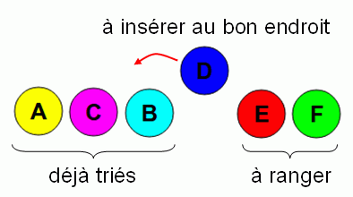

Castor possède 6 frisbees de différentes couleurs et de différents poids. Il souhaite les ranger sur son étagère du plus léger (à gauche) au plus lourd (à droite).
Aidez Castor à ranger ses frisbees. Pour comparer le poids de deux frisbees, faites-en glisser un sur l'autre. La balance vous indiquera alors quel est le plus léger des deux.
La solution est : FDACBE.
Il existe de nombreuses méthodes pour trier des objets. Une méthode particulièrement adaptée pour ce sujet consiste à trier d'abord les deux premiers frisbees, puis prendre le troisième et le placer au bon endroit par rapport aux deux premiers, puis prendre le quatrième et l'insérer à sa place par rapport aux trois premiers, etc... Par exemple, au moment où l'on a déjà les trois premiers frisbees dans l'ordre (A, puis C, puis B), on se retrouvent dans la situation suivante, où l'on se demande où placer le frisbee D.

Pour savoir où insérer D, on le compare avec les frisbees déjà triés. Par exemple, si D était plus lourd que C mais plus léger que B, on le placerait entre C et B. Il se trouve que D est plus léger que A, du coup on place D tout à gauche.
En répétant ce processus, on peut ranger les frisbees un par un à leur place. À la fin, pour vérifier que l'on ne s'est pas trompé, on peut s'assurer que tous les frisbees sont dans le bon ordre. Pour cela, on vérifie que chaque frisbee est bien plus léger que le frisbee placé immédiatement à sa droite.
Dans ce sujet, il fallait trouver et appliquer une méthode pour trier des objets. Il existe de nombreux « algorithmes de tris ».
Tant qu'il n'y a qu'un petit nombre d'objets à trier, on peut utiliser n'importe quel algorithme de tri. En revanche, en informatique ont est souvent amené à trier des millions, voire des milliards de données. Pour de telles applications, il est important d'utiliser un algorithme de tri plus efficace que celui décrit dans la solution de ce sujet.